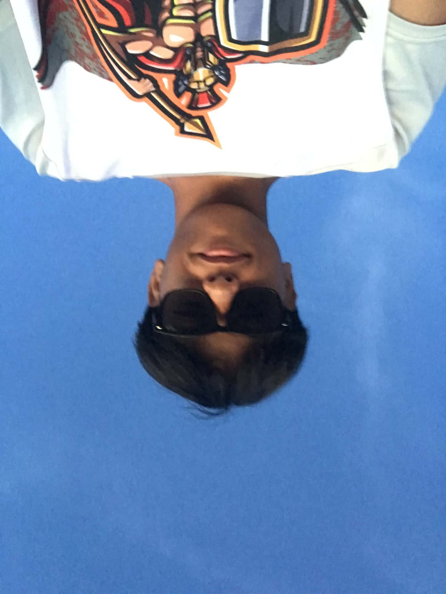

Hello! My name is Jovane Limpangog, but you can call me “Van.” I consider myself a slow learner, but I never let that stop me from trying my best. I may not always understand things quickly, but I am patient with myself and willing to learn step by step. For me, education is not about being the fastest—it is about growing and improving every day.
I come from a loving and supportive family who always encourages me, even when I struggle. They remind me that it’s okay to take things slowly as long as I don’t give up. Because of them, I learned the value of hard work, patience, and believing in myself, even when things get difficult.
As a student, I face many challenges, especially when lessons become hard to understand. There are times when I feel left behind, but I choose to keep going. I ask questions, practice more, and do my best to catch up. Being a slow learner doesn’t mean I cannot succeed—it just means my journey is different.
In my personal life, I enjoy spending time with my friends and doing simple things that make me happy. These moments help me relax and give me strength to continue working on my goals. I believe that learning should not only be about pressure but also about enjoying the process.
My dream in life is to become successful in my own way and make my family proud. I may take longer than others, but I am determined to reach my goals. I want to prove that even a slow learner can achieve great things with patience, effort, and a strong heart.